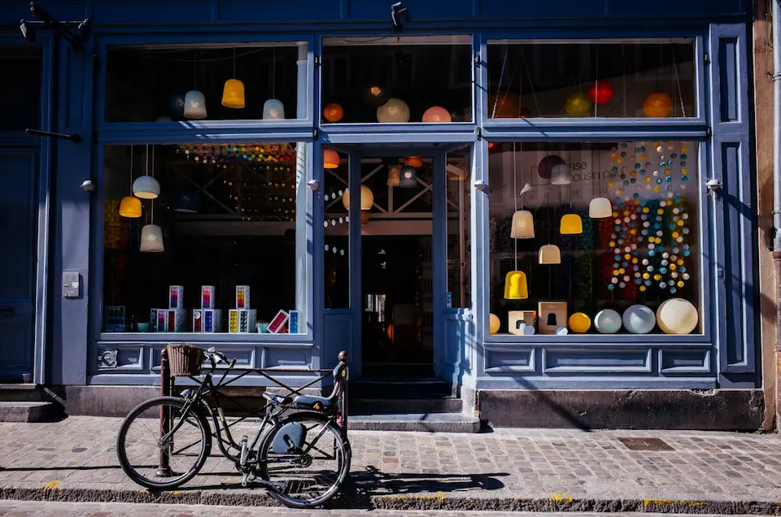
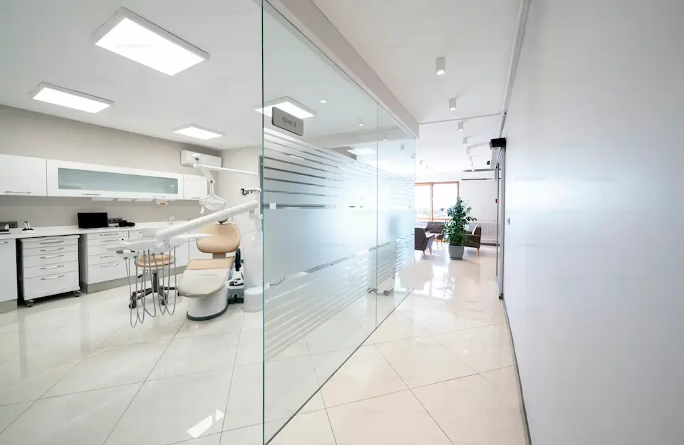
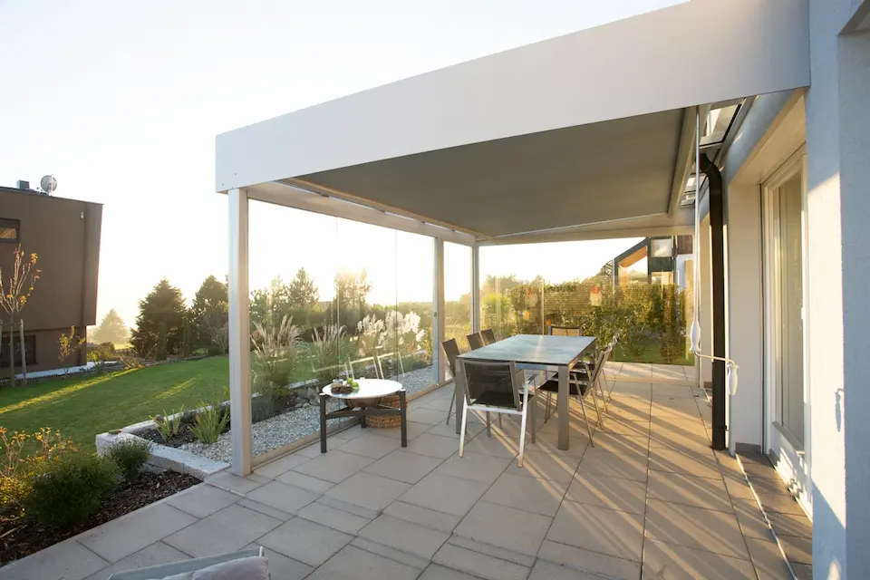

Excellence, écologie et expertise
Shine Yours est votre partenaire de confiance pour tous vos besoins en nettoyage à Genève et ses environs. Nous intervenons auprès des professionnels et des particuliers avec des solutions sur-mesure, respectueuses de l'environnement et garantissant des résultats impeccables.
Une méthodologie éprouvée pour des résultats exceptionnels
Chaque projet commence par une visite gratuite de nos experts. Nous analysons vos besoins spécifiques, identifions les zones sensibles et établissons un plan d'action détaillé. Cette étape nous permet de vous proposer un devis précis et transparent, sans surprise.
Nos équipes formées interviennent avec du matériel professionnel de dernière génération. Nous utilisons des produits écologiques certifiés, efficaces contre les bactéries tout en préservant votre santé et l'environnement. Chaque intervention suit un protocole strict garantissant hygiène et qualité.
Après chaque prestation, nous effectuons un contrôle qualité rigoureux. Votre satisfaction est notre priorité : nous restons à votre écoute et intervenons gratuitement si nécessaire. Pour nos clients réguliers, nous assurons un suivi personnalisé et adaptons nos services selon l'évolution de vos besoins.
Solutions sur-mesure pour entreprises et collectivités

Des bureaux propres et bien organisés sont la clé du confort et de la productivité. Notre service de nettoyage professionnel garantit un environnement sain pour vos collaborateurs.
Dépoussiérage du mobilier, désinfection des postes de travail, nettoyage des claviers et écrans
Lavage des sols, entretien des moquettes, nettoyage des vitres et surfaces vitrées
Entretien des sanitaires, désinfection des espaces partagés, nettoyage des cuisines d'entreprise
Interventions adaptées à vos horaires : en soirée, tôt le matin ou le week-end pour ne pas perturber votre activité

L'entretien régulier d'un immeuble est essentiel pour valoriser le bien et garantir le confort des résidents. Shine Yours prend en charge vos parties communes avec professionnalisme.
Halls d'entrée, cages d'escalier, ascenseurs, paliers et couloirs maintenus impeccables
Nettoyage des vitres, rampes et poignées, entretien des parkings et caves
Traitement antibactérien des zones de contact fréquent pour l'hygiène de tous
Contrats d'entretien régulier : hebdomadaire, bi-hebdomadaire ou mensuel selon vos besoins

Dans la restauration, l'hygiène est primordiale. Shine Yours assure un nettoyage professionnel pour garantir la sécurité de vos clients.
Dégraissage des hottes et extracteurs, désinfection des plans de travail, sols antidérapants
Nettoyage des tables et chaises, sols, vitres et devantures pour accueillir vos clients
Interventions en dehors des heures de service pour ne pas perturber votre activité

Les salles de sport nécessitent un nettoyage rigoureux quotidien pour garantir l'hygiène et la sécurité de vos adhérents. Shine Yours maintient vos espaces fitness impeccables.
Désinfection complète des machines, haltères, tapis et accessoires de fitness
Nettoyage intensif des douches, casiers, sols antidérapants et miroirs
Traitement antibactérien et désodorisation professionnelle des espaces
Interventions multiples possibles dans la journée selon votre fréquentation

Après des travaux, un nettoyage professionnel est indispensable pour rendre les lieux habitables. Shine Yours assure un nettoyage complet post-chantier clé en main.
Débarras complet des déchets de chantier et poussières accumulées
Nettoyage des vitres, élimination des traces de colle, peinture et ciment
Lavage des sols, décapage si nécessaire, dépoussiérage complet
Coordination avec vos artisans pour une livraison clé en main. Devis sur visite.

Pour libérer vos espaces, Shine Yours propose un service d'enlèvement d'encombrants professionnel et respectueux de l'environnement.
Débarras de meubles, électroménager, démontage si nécessaire
Chargement professionnel et transport vers centres de tri agréés
Valorisation maximale des déchets dans le respect de l'environnement
Intervention rapide possible, même pour les urgences de fin de bail

Offrez une expérience client irréprochable avec un espace commercial impeccable. Shine Yours intervient pour maintenir la propreté de vos boutiques, magasins et centres commerciaux.
Nettoyage des vitrines et surfaces d'exposition, dépoussiérage des rayonnages et présentoirs
Entretien des sols, sanitaires clients, cabines d'essayage et espaces d'accueil
Désinfection des caisses, poignées de portes, écrans tactiles et zones à fort passage
Interventions possibles en dehors des heures d'ouverture pour ne pas perturber votre activité commerciale

Pour les cabinets médicaux, dentaires, cliniques et établissements de soins, un environnement sanitaire irréprochable est primordial.
Désinfection complète des salles d'examen, tables de consultation et équipements médicaux
Nettoyage rigoureux des salles d'attente, sanitaires et espaces communs
Traitement des sols et élimination des déchets
Nous adaptons nos interventions à votre planning médical pour garantir la continuité des soins
Nettoyage spécialisé pour votre domicile et véhicule

Un nettoyage automobile complet en 5 étapes :
Prélavage, dégoudronnage, lavage manuel minutieux et décontamination complète de la carrosserie. Nettoyage intensif des jantes avec brossage des recoins.
Polissage pour éliminer les micro-rayures, traitement des vitres sans traces et application d'une cire protectrice pour un éclat durable.
Aspiration complète, nettoyage des plastiques, detailing des aérations et zones difficiles d'accès avec pinceaux professionnels.
Shampooing par injection-extraction pour sièges et tapis, traitement nourrissant pour cuir, élimination des taches tenaces.
Désinfection antibactérienne, neutralisation des odeurs et diffusion d'un parfum frais pour un habitacle sain.
Résultat : un véhicule comme neuf, propre de la carrosserie à l'habitacle !

Remise en état complète pour un départ serein :
De la cave au grenier : sols, murs, plafonds, fenêtres, sanitaires, cuisine. Chaque pièce est traitée avec soin pour un rendu impeccable.
Détartrage sanitaires, dégraissage cuisine, nettoyage four et frigo, traitement des joints et interrupteurs.
Lavage des vitres sans traces, aspiration complète, évacuation des déchets. Logement prêt pour état des lieux.
Idéal pour récupérer votre caution sans souci !

Nettoyage en profondeur de vos textiles d'ameublement :
Identification des matériaux (tissu, cuir, synthétique), repérage des taches et aspiration minutieuse pour éliminer poussière et débris.
Application de détachants ciblés et travail manuel pour déloger les taches incrustées sans abîmer les fibres.
Machine à injection-extraction pour nettoyage en profondeur des tissus. Injection de solution nettoyante puis extraction immédiate de la saleté et des allergènes.
Élimination des acariens et bactéries avec produit antibactérien. Séchage accéléré par ventilateurs pour éviter l'humidité et les moisissures.
Neutralisation des odeurs, protection imperméabilisante pour tissus et traitement nourrissant pour cuir. Parfum frais durable.
Vos canapés, matelas et tapis retrouvent fraîcheur et propreté pour un intérieur sain !

Nettoyage en profondeur de vos textiles d'ameublement :
Identification des matériaux (tissu, cuir, synthétique), repérage des taches et aspiration minutieuse pour éliminer poussière et débris.
Application de détachants ciblés et travail manuel pour déloger les taches incrustées sans abîmer les fibres.
Machine à injection-extraction pour nettoyage en profondeur des tissus. Injection de solution nettoyante puis extraction immédiate de la saleté et des allergènes.
Élimination des acariens et bactéries avec produit antibactérien. Séchage accéléré par ventilateurs pour éviter l'humidité et les moisissures.
Neutralisation des odeurs, protection imperméabilisante pour tissus et traitement nourrissant pour cuir. Parfum frais durable.
Vos canapés, matelas et tapis retrouvent fraîcheur et propreté pour un intérieur sain !

Redonnez vie à vos espaces extérieurs avec un nettoyage en profondeur :
Identification du type de revêtement (bois, pierre, carrelage, béton), analyse de l'état et des salissures, protection des plantes et mobilier.
Démoussage complet de la terrasse et des dalles, élimination des traces noires et verdâtres, nettoyage des joints et recoins, rinçage professionnel.
Nettoyage en profondeur du mobilier de jardin, traitement anti-taches des coussins et textiles, entretien du bois (huile protectrice si nécessaire).
Application d'un traitement hydrofuge pour protéger durablement, nettoyage des gouttières et évacuations, élimination des mauvaises herbes entre les dalles.
Une terrasse propre et entretenue pour profiter pleinement de vos moments en extérieur !

Un nettoyage complet de votre résidence en 5 étapes :
Dépoussiérage complet de toutes les pièces, nettoyage des sols (parquet, carrelage, moquette), lavage des vitres intérieures, entretien des sanitaires et cuisine.
Aspiration et shampoing des canapés et fauteuils, nettoyage des rideaux et textiles, détartrage et désinfection des robinetteries, entretien des surfaces en inox et vitres.
Nettoyage haute pression des façades et terrasses, lavage des volets et gouttières, nettoyage des allées et cours, entretien du mobilier extérieur.
Nettoyage de la piscine et abords, entretien du garage et cave, nettoyage des vérandas et pergolas, traitement des zones humides (anti-moisissures).
Contrôle qualité final pièce par pièce, désodorisation si nécessaire, conseils d'entretien personnalisés, garantie satisfaction.
Un service complet pour maintenir votre propriété dans un état impeccable toute l'année !
Shine Yours intervient dans tout le canton de Genève et les communes avoisinantes. Notre proximité nous permet d'être réactifs et de garantir des délais d'intervention courts.
Votre commune n'est pas listée ?
Contactez-nous ! Nous étudions toutes les demandes dans un rayon de 50km autour de Genève (Bellevue Satigny Coppet Genthod Versoix Crans Nyon Rolle Aubonne Morges Lausanne Montreux Neuchatel Fribourg Bulle)
Demander une interventionCanton de Genève
& environs
Travail sécurisé
Respect absolu
Devis gratuit
Satisfaction garantie
Produits durables
Réponse rapide
Nos prix sont clairs, sans frais cachés
Nos tarifs dépendent de plusieurs facteurs : surface à nettoyer, type de prestation, fréquence d'intervention et niveau de salissure.
*Prix indicatifs, devis personnalisé gratuit
Tout ce que vous devez savoir sur nos services de nettoyage
Oui, nous intervenons dans tout le canton de Genève et ses environs (jusqu'à 30km). Que vous soyez au centre-ville, à Carouge, Meyrin, Thônex ou dans les communes périphériques, nous nous déplaçons pour un devis gratuit et sans engagement.
Absolument ! Nous nous déplaçons gratuitement pour évaluer vos besoins et établir un devis détaillé. Vous n'avez aucune obligation de signer, et notre estimation est valable 30 jours. Nous prenons le temps d'analyser chaque situation pour vous proposer un tarif juste et transparent.
Nous privilégions des produits écologiques certifiés, efficaces contre les bactéries tout en respectant votre santé et l'environnement. Pour les surfaces sensibles (cuir, textiles délicats), nous adaptons nos produits pour garantir un nettoyage en profondeur sans risque d'endommagement.
Oui, nous établissons des contrats de nettoyage régulier sur-mesure : quotidien, hebdomadaire ou mensuel. Nos interventions s'adaptent à vos horaires (soir, week-end) pour ne pas perturber votre activité. Des réductions attractives sont appliquées pour les contrats longue durée (jusqu'à -15% sur un contrat annuel).
Un nettoyage complet de véhicule (intérieur + extérieur) prend environ 2h30 à 3h. Pour un canapé 3 places, comptez 1h30 à 2h selon l'état et le niveau de salissure. Le séchage nécessite ensuite 3-4h supplémentaires (nous utilisons des ventilateurs pour accélérer le processus).
C'est vous qui choisissez ! Pour les particuliers, beaucoup préfèrent nous laisser les clés pour plus de confort. Pour les professionnels, nous intervenons souvent en dehors des heures d'ouverture. Dans tous les cas, nous nous adaptons à vos préférences et garantissons une discrétion totale.
Oui, Shine Yours est une entreprise assurée. Bien que nous prenions toutes les précautions nécessaires, nous disposons d'une couverture complète pour votre tranquillité d'esprit. Nos équipes sont formées aux techniques professionnelles pour garantir un travail sécurisé et de qualité.
Pour les interventions ponctuelles, nous pouvons souvent intervenir sous 48-72h selon nos disponibilités. Pour les urgences (fin de bail, événement imminent), nous faisons notre maximum pour nous adapter. Les contrats réguliers sont planifiés à l'avance selon votre calendrier.
Oui, nous acceptons les paiements par virement bancaire avec facture pour les professionnels. Pour les particuliers, nous acceptons également les espèces et les cartes. Le paiement s'effectue après la prestation, une fois que vous êtes pleinement satisfait du résultat.
Votre satisfaction est notre priorité ! Si un détail vous déplaît, contactez-nous dans les 24h et nous reviendrons gratuitement pour corriger. Nous effectuons systématiquement un contrôle qualité avant de partir, mais votre avis compte et nous voulons que vous soyez 100% satisfait.
Vous avez d'autres questions ?
Contactez-nous directement